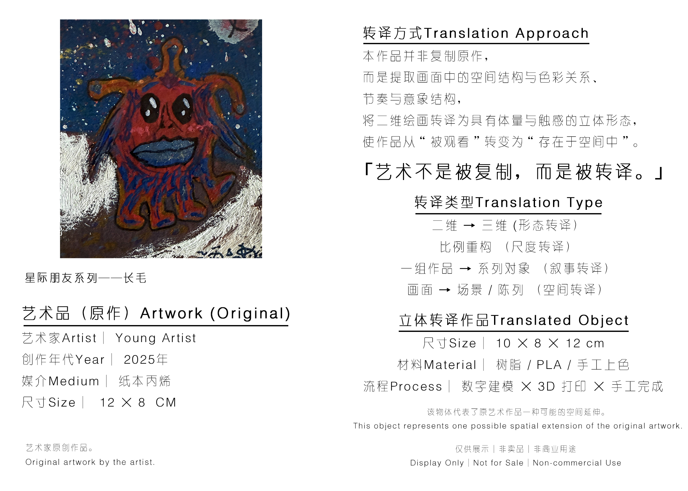
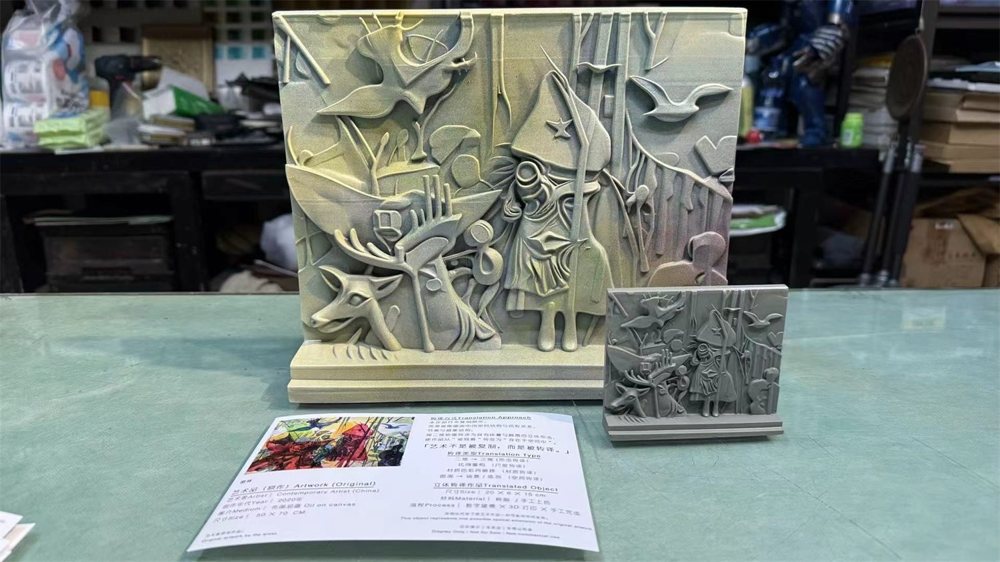

该样本来自测试系列中的一件二维视觉作品或艺术图像，具体作品名称、媒介、尺寸与来源以介绍图标注为准。当前页面不替代原作版权说明，仅作为转译样本档案。
Test Series Archive
青少年怪兽形象转译样本
测试系列编号：TP-2026-SGM-TS01-031。本页用于记录该样本的原作信息、转译过程、成品形态、用途、版权状态与授权可能性。


从作品中的角色、色彩和主要意象出发，保留儿童/青少年创作中最有辨识度的视觉特征，将其转化为可展示、可纪念的小型立体结构。
形成小尺寸结构模型，可包含白模、涂装版本、底座、说明卡或展示组合。模型用于验证该作品是否适合从二维图像进入三维空间。
适合少儿美术机构课程成果、学生作品展、成长档案、家庭纪念与创作者早期 IP 观察。
原作版权归创作者及其监护人所有。展示、复制、销售或机构合作前，应取得创作者/监护人及相关机构的明确授权。
可在监护人和机构授权后进入课程增值、成果展、纪念品、小批量复制或教育合作；如公开销售，应单独确认署名、版数和分成。